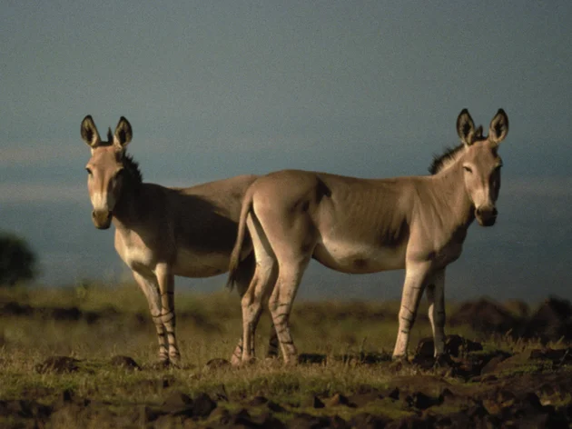
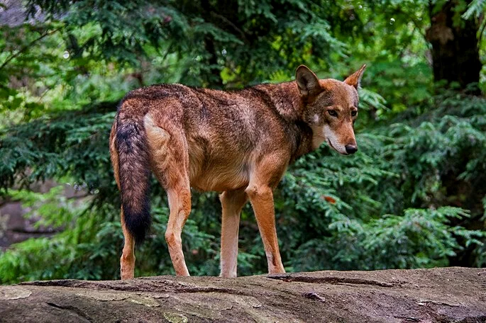
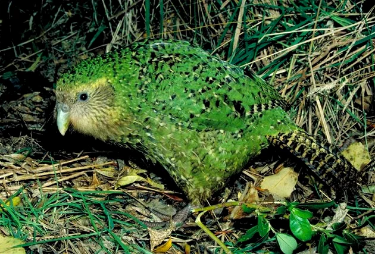
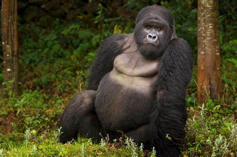
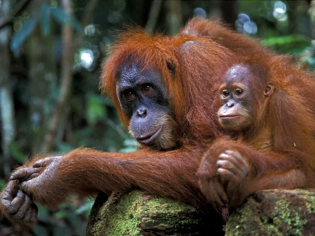
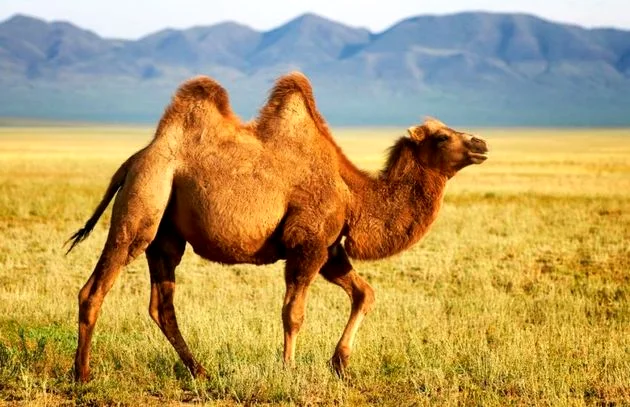

Bem vindo a nossa pagina
Animais em Extinção no Mundo
1. Asno-selvagem-africano (Equus africanus)
O asno-selvagem-africano é um animal que está
criticamente ameaçado de extinção
2. Foca-monge-do-Havaí (Monachus schauinslandi)

A foca-monge-do-Havaí está classificada como em perigo
de extinção
3. Lobo-vermelho (Canis rufus)
O lobo-vermelho vive em cativeiro e é considerado como
criticamente ameaçado de extinção
4. Tigre-de-bengala (Panthera tigris tigris)

O tigre-de-bengala está classificado como criticamente
ameaçado de extinção
5. Atum-azul (Thunnus thynnus)

O atum-azul está classificado como criticamente
ameaçado de extinção
6. Kakapo (Strigops habroptilus)
O kakapo é uma ave classificada como criticamente
ameaçada de extinção
7. Gorila-das-montanhas (Gorilla beringei)
O Gorila-das-montanhas é classificada
como criticamente
ameaçada de extinção
8. Zebra-de-grévy (Equus grevyi)

A zebra-de-grévy está classificada como em perigo de
extinção
9. Orangotango-da-Sumatra (Pongo abelii)
O orangotango-da-Sumatra está classificada como
criticamente ameaçado de extinção
10. Camelo bactriano (Camelus bactrianus)
O camelo bactriano está classificado como criticamente
ameaçado de extinção